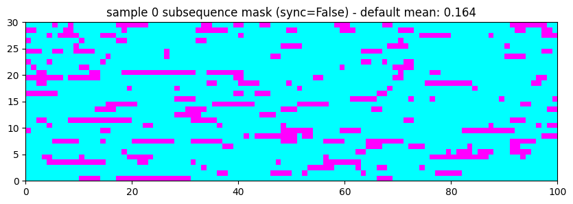
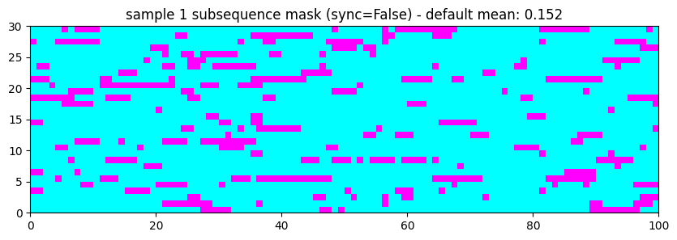
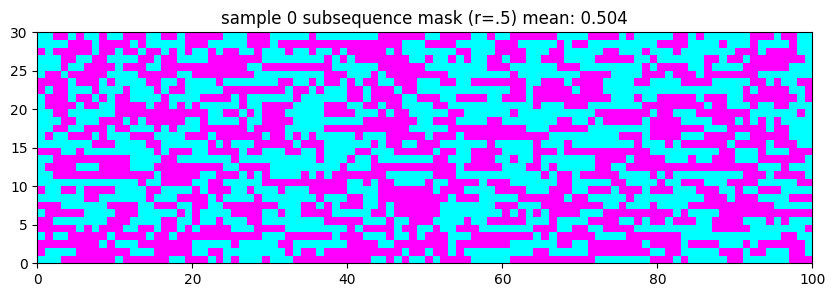
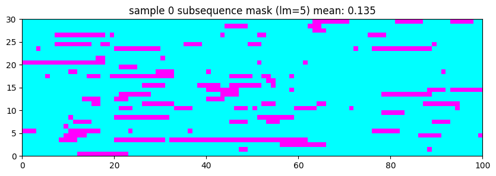
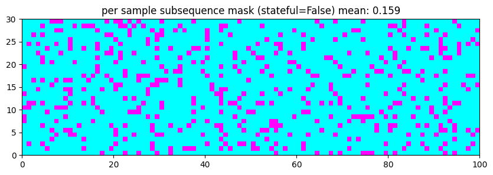
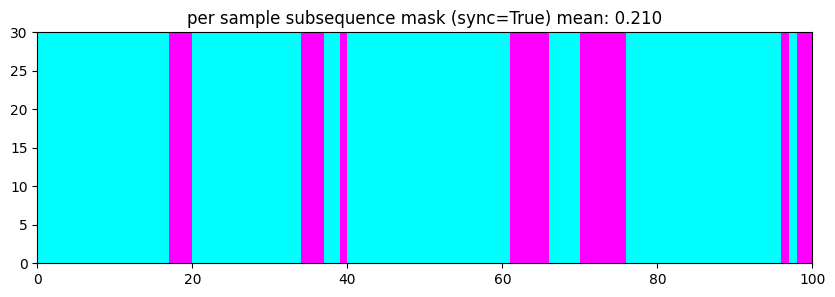
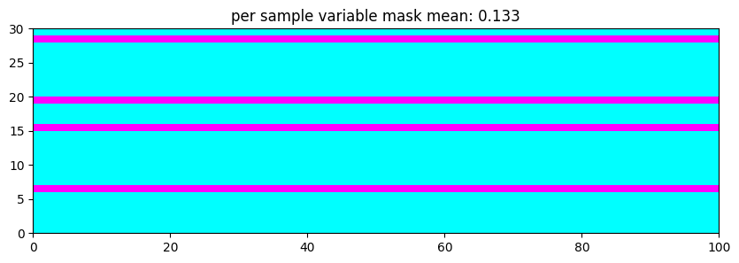
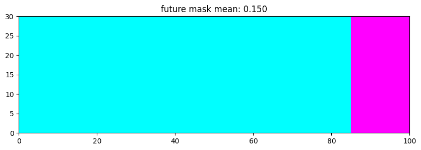
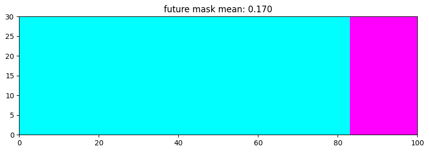
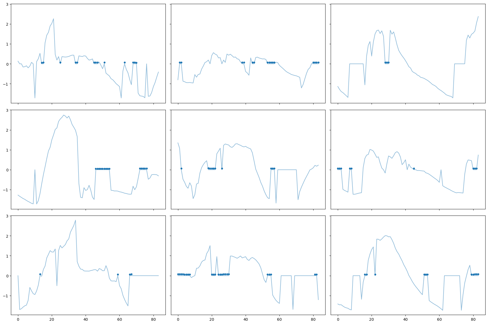

t = torch.rand(16, 3, 100)
mask = create_subsequence_mask(t, sync=False)
test_eq(mask.shape, t.shape)
mask = create_subsequence_mask(t, sync=True)
test_eq(mask.shape, t.shape)
mask = create_variable_mask(t)
test_eq(mask.shape, t.shape)
mask = create_future_mask(t)
test_eq(mask.shape, t.shape)MVP (aka TSBERT)
Self-Supervised Pretraining of Time Series Models
Masked Value Predictor callback used to predict time series step values after a binary mask has been applied.
self_mask
self_mask (o)
create_future_mask
create_future_mask (o, r=0.15, sync=False)
create_variable_mask
create_variable_mask (o, r=0.15)
create_subsequence_mask
create_subsequence_mask (o, r=0.15, lm=3, stateful=True, sync=False)
o = torch.randn(2, 3, 4)
o[o>.5] = np.nan
test_eq(torch.isnan(self_mask(o)).sum(), 0)t = torch.rand(16, 30, 100)
mask = create_subsequence_mask(t, r=.15) # default settings
test_eq(mask.dtype, torch.bool)
plt.figure(figsize=(10, 3))
plt.pcolormesh(mask[0], cmap='cool')
plt.title(f'sample 0 subsequence mask (sync=False) - default mean: {mask[0].float().mean().item():.3f}')
plt.show()
plt.figure(figsize=(10, 3))
plt.pcolormesh(mask[1], cmap='cool')
plt.title(f'sample 1 subsequence mask (sync=False) - default mean: {mask[1].float().mean().item():.3f}')
plt.show()

t = torch.rand(16, 30, 100)
mask = create_subsequence_mask(t, r=.5) # 50% of values masked
test_eq(mask.dtype, torch.bool)
plt.figure(figsize=(10, 3))
plt.pcolormesh(mask[0], cmap='cool')
plt.title(f'sample 0 subsequence mask (r=.5) mean: {mask[0].float().mean().item():.3f}')
plt.show()
t = torch.rand(16, 30, 100)
mask = create_subsequence_mask(t, lm=5) # average length of mask = 5
test_eq(mask.dtype, torch.bool)
plt.figure(figsize=(10, 3))
plt.pcolormesh(mask[0], cmap='cool')
plt.title(f'sample 0 subsequence mask (lm=5) mean: {mask[0].float().mean().item():.3f}')
plt.show()
t = torch.rand(16, 30, 100)
mask = create_subsequence_mask(t, stateful=False) # individual time steps masked
test_eq(mask.dtype, torch.bool)
plt.figure(figsize=(10, 3))
plt.pcolormesh(mask[0], cmap='cool')
plt.title(f'per sample subsequence mask (stateful=False) mean: {mask[0].float().mean().item():.3f}')
plt.show()
t = torch.rand(1, 30, 100)
mask = create_subsequence_mask(t, sync=True) # all time steps masked simultaneously
test_eq(mask.dtype, torch.bool)
plt.figure(figsize=(10, 3))
plt.pcolormesh(mask[0], cmap='cool')
plt.title(f'per sample subsequence mask (sync=True) mean: {mask[0].float().mean().item():.3f}')
plt.show()
t = torch.rand(1, 30, 100)
mask = create_variable_mask(t) # masked variables
test_eq(mask.dtype, torch.bool)
plt.figure(figsize=(10, 3))
plt.pcolormesh(mask[0], cmap='cool')
plt.title(f'per sample variable mask mean: {mask[0].float().mean().item():.3f}')
plt.show()
t = torch.rand(1, 30, 100)
mask = create_future_mask(t, r=.15, sync=True) # masked steps
test_eq(mask.dtype, torch.bool)
plt.figure(figsize=(10, 3))
plt.pcolormesh(mask[0], cmap='cool')
plt.title(f'future mask mean: {mask[0].float().mean().item():.3f}')
plt.show()
t = torch.rand(1, 30, 100)
mask = create_future_mask(t, r=.15, sync=False) # masked steps
mask = create_future_mask(t, r=.15, sync=True) # masked steps
test_eq(mask.dtype, torch.bool)
plt.figure(figsize=(10, 3))
plt.pcolormesh(mask[0], cmap='cool')
plt.title(f'future mask mean: {mask[0].float().mean().item():.3f}')
plt.show()
create_mask
create_mask (o, r=0.15, lm=3, stateful=True, sync=False, subsequence_mask=True, variable_mask=False, future_mask=False)
MVP
MVP (r:float=0.15, subsequence_mask:bool=True, lm:float=3.0, stateful:bool=True, sync:bool=False, variable_mask:bool=False, future_mask:bool=False, custom_mask:Optional=None, sel_vars:Optional[list]=None, nan_to_num:int=0, window_size:Optional[tuple]=None, dropout:float=0.1, crit:<built- infunctioncallable>=None, weights_path:Optional[str]=None, target_dir:str='./models/MVP', fname:str='model', save_best:bool=True, verbose:bool=False)
Basic class handling tweaks of the training loop by changing a Learner in various events
Experiments
from tsai.data.external import get_UCR_data, check_data
from tsai.data.preprocessing import TSStandardize, TSNan2Value
from tsai.data.core import TSCategorize, get_ts_dls
from tsai.learner import ts_learner
from tsai.models.InceptionTimePlus import InceptionTimePlusdsid = 'MoteStrain'
X, y, splits = get_UCR_data(dsid, split_data=False)
check_data(X, y, splits, False)
X[X<-1] = np.nan # This is to test the model works well even if nan values are passed through the dataloaders.X - shape: [1272 samples x 1 features x 84 timesteps] type: memmap dtype:float32 isnan: 0
y - shape: (1272,) type: memmap dtype:<U1 n_classes: 2 (636 samples per class) ['1', '2'] isnan: False
splits - n_splits: 2 shape: [20, 1252] overlap: False# Pre-train
tfms = [None, [TSCategorize()]]
batch_tfms = [TSStandardize(by_var=True)]
unlabeled_dls = get_ts_dls(X, splits=splits, tfms=tfms, batch_tfms=batch_tfms)
learn = ts_learner(unlabeled_dls, InceptionTimePlus, cbs=[MVP(fname=f'{dsid}', window_size=(.5, 1))]) # trained on variable window size
learn.fit_one_cycle(1, 3e-3)| epoch | train_loss | valid_loss | time |
|---|---|---|---|
| 0 | 1.270972 | 1.194974 | 00:06 |
learn = ts_learner(unlabeled_dls, InceptionTimePlus, cbs=[MVP(weights_path=f'models/MVP/{dsid}.pth')])
learn.fit_one_cycle(1, 3e-3)| epoch | train_loss | valid_loss | time |
|---|---|---|---|
| 0 | 0.837741 | 1.200484 | 00:07 |
learn.MVP.show_preds(sharey=True) # these preds are highly inaccurate as the model's been trained for just 1 epoch for testing purposes
# Fine-tune
tfms = [None, [TSCategorize()]]
batch_tfms = [TSStandardize(by_var=True), TSNan2Value()]
labeled_dls = get_ts_dls(X, y, splits=splits, tfms=tfms, batch_tfms=batch_tfms, bs=64)
learn = ts_learner(labeled_dls, InceptionTimePlus, pretrained=True, weights_path=f'models/MVP/{dsid}.pth', metrics=accuracy)
learn.fit_one_cycle(1)| epoch | train_loss | valid_loss | accuracy | time |
|---|---|---|---|---|
| 0 | 0.773015 | 0.744267 | 0.460863 | 00:09 |
tfms = [None, [TSCategorize()]]
batch_tfms = [TSStandardize(by_var=True), TSNan2Value()]
unlabeled_dls = get_ts_dls(X, splits=splits, tfms=tfms, batch_tfms=batch_tfms, bs=64)
fname = f'{dsid}_test'
mvp = MVP(subsequence_mask=True, sync='random', variable_mask=True, future_mask=True, fname=fname)
learn = ts_learner(unlabeled_dls, InceptionTimePlus, metrics=accuracy, cbs=mvp) # Metrics will not be used!/Users/nacho/opt/anaconda3/envs/py37torch113/lib/python3.7/site-packages/ipykernel_launcher.py:42: UserWarning: Only future_mask will be usedtfms = [None, [TSCategorize()]]
batch_tfms = [TSStandardize(by_var=True)]
unlabeled_dls = get_ts_dls(X, splits=splits, tfms=tfms, batch_tfms=batch_tfms, bs=64)
fname = f'{dsid}_test'
mvp = MVP(subsequence_mask=True, sync='random', variable_mask=True, future_mask=True, custom_mask=partial(create_future_mask, r=.15),
fname=fname)
learn = ts_learner(unlabeled_dls, InceptionTimePlus, metrics=accuracy, cbs=mvp) # Metrics will not be used!/Users/nacho/opt/anaconda3/envs/py37torch113/lib/python3.7/site-packages/ipykernel_launcher.py:40: UserWarning: Only custom_mask will be usedtry: os.remove("models/MVP/MoteStrain.pth")
except OSError: pass
try: os.remove("models/MVP/model.pth")
except OSError: pass